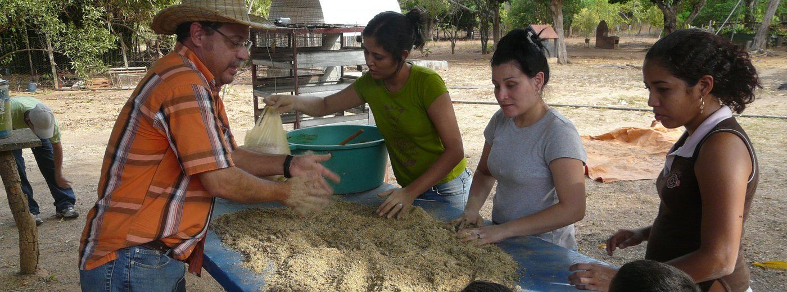

En «Jornada de siembra en el Jardín Botánico: lo que se hizo, lo que falta y la próxima fecha»
Dejo la nota de moderación: el hilo queda fijado hasta el 7 de noviembre. Las coordinaciones de herramientas y transporte van en este mismo hilo.

Práctica de campo, UNELLEZ · Angonfer / Wikimedia Commons (CC BY-SA 4.0)

@mf.rondon · Barinas, Venezuela
Estudiante de Ingeniería de Sistemas, 8.º semestre. Trabajo en el laboratorio de redes y coordino el club de robótica. Me interesa la accesibilidad web y cómo se enseña programación sin miedo. También voy a las jornadas de siembra del Jardín Botánico cuando el horario lo permite.
Dejo la nota de moderación: el hilo queda fijado hasta el 7 de noviembre. Las coordinaciones de herramientas y transporte van en este mismo hilo.
Busco experiencias del semestre pasado: carga de trabajo, entregas y si exige trabajo comunitario presencial.
No es el router: el switch del piso 2 lleva semanas saturado. Si pueden, conecten el repetidor al puerto 4 y no al 1.
Plantilla de actas, evidencias y cronograma que usamos en Proyectos. Incluye los errores que nos costaron una semana.
Me sumo para la parte de documentación y pruebas. Puedo los martes y jueves después de las 4:00 en el laboratorio 3.